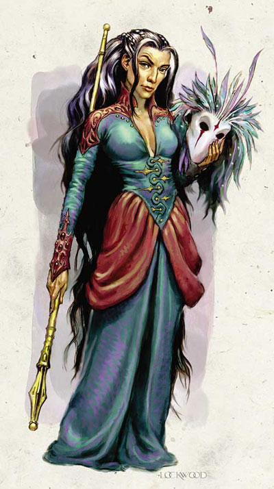

进阶职业--莱瑟曼的女巫议会--哈斯兰Hathran

前言
哈斯兰（在莱瑟曼语中是「博学的姊妹」learned sisterhood的意思）是一群统治莱瑟曼的精英女性施法者，她们也被称为莱瑟曼女巫。在她们自己家乡的土地上，她们的法术比其他与她们同级的外来施法者更为强大。在莱瑟曼社会里女巫享有最高的地位（这在其他大部分费伦的文化中是少见的）。她们可以治疗疾病与创伤、照料她们同胞的精神生活、从其他位面（plane）召唤勇士，而且还可以起死回生。
在哈斯兰的阶级中，1级女巫会被称作「布莱斯兰」blethran（「初学的姊妹」sisterkin）；而9级与10级的女巫被称为「欧斯洛」othlor（「可靠者」true ones），她们对其他地位较低的女巫拥有绝对的权威。虽然莱瑟曼女巫对所有的莱瑟曼人都有生杀在握的权力，但是如果滥用这种权力会被女巫议会视为对她们严重的冒犯。当在莱瑟曼境内活动时，女巫们总是戴着面具。有许多女巫被派到外地去学习其他文化或监视其他敌对势力。
要加入莱瑟曼女巫需要在秘术与神术上都有一定造诣。通常女巫的职业都是法师兼牧师，但是也有一些女性会发展其他方面的力量而兼职吟游诗人、德鲁依、游侠或是术士。她们对于所谓两个施法系统不同的法术理论感到无法接受（注：莱瑟曼女巫认为秘术与神术两者并无不同），因而对这种说法嗤之以鼻。她们乐于和所有的成员互相分享法术。
在莱瑟曼文化中，制造魔法物品是男性施法者的工作，女巫不准学习跟制造物品有关的专长（这被视为社会的耻辱，故违犯者会被女巫议会除名与放逐）。但惟一特许可以学习的是抄录卷轴，因为女巫们需要使用卷轴来教导新进成员秘术与神术。所以希望加入莱瑟曼女巫的女性施法者会把她们的未加入前得到的专长拿来学习超魔法专长或法术掌握（spell master）专长。
生命骰数：D4
职业要件：
阵营：守序善良、中立善良、守序中立
种族：莱瑟曼当地或是有莱瑟曼人血统的人类女性
施法能力：能施展2级秘术与2级神术
专长：莱瑟曼女巫认可Ethran
【注：专长—莱瑟曼女巫认可Ethran [一般]
角色成为一个Ethran的成员并开始深入学习莱瑟曼女巫的秘密
先决条件：女性，魅力11以上，施法等级1以上，社会许可。
地区：莱瑟曼Rashemen
用途：角色成为一个受人尊敬的莱瑟曼女巫的成员。在动物沟通和方向感技能检定上得到+2的奖励。当和别的莱瑟曼人交涉时，所有以魅力为关键属性的技能上得到+2优势。要学习这个专长需要得到DM的允许并得让莱瑟曼女巫议会对自己保持好感，如果失去了她们的认可，角色会失去这个专长带来的所有用途。】
信仰：裳提Chauntea、密斯特拉Mystra、梅丽凯Mielikki
特殊要求：必须在莱瑟曼女巫议会中有良好的名声
职业技能：
以力量为关键属性者：游泳
以体质为关键属性者：心神集中
以智力为关键属性者：炼金术、手艺、知识（任何）、占卜、学习语言、法术造诣
以智慧为关键属性者：方向感、专业、野外求生
以魅力为关键属性者：动物沟通、表演、
每级技能点数：2+智力调整值
职业特色：
1擅长武器与防具：
第1级时，莱瑟曼女巫可以获得「专长—擅长特殊武器（长鞭）」
2每日施法次数：
莱瑟曼女巫在秘术与神术上都有极佳的造诣。当莱瑟曼女巫升级时，她可以自由选择要提升秘术或神术的每日施法次数，就像她们在该基本职业上得到新等级一样（不过只有每日施法次数与法术豁免难度提升）。所有的莱瑟曼女巫都是兼职的施法者，不过有的专精秘术，有的专精神术，其他人则是两者均衡发展。
莱瑟曼女巫们可以施展下列表上的神术。这些法术在施放时视为秘术而且必须用习得一般秘术的方式来学习（就是抄神术卷轴…）。她们可以使用特定等级的秘术法术格来施展这些法术，其施法等级视为她在秘术方面造诣等级的施法者（比如一个2级法师兼2级牧师兼2级莱瑟曼女巫[秘术与神术各分配1级]的女性，当她施展莱瑟曼秘术月之尘moonbean时，其秘术施法者等级视为一般3级法师）。
莱瑟曼特殊法术表（Hathran spell）：
1级法术：碎物散射scatterspray
2级法术：月之尘moonbean
3级法术：flashbrust、月之刃moon blade
5级法术：月之路moon path
[注：这些都是FR的特有法术]
3随身护卫Cohort：
在第1级时，莱瑟曼女巫可以得到1位随身护卫，就像她拥有领导才能Leadership专长一样。这个护卫是一个至少1级的男性野蛮人或是一个拥有 Ethran专长但尚未进入女巫团体的女性施法者。如果这位女巫拥有领导才能专长，当她在招募部下时，这个护卫不会被当成追随者（也就是不会有减值）。
[明斯克与戴娜黑…]
4大地之密法Place Magic：
莱瑟曼女巫与她们家乡的土地有强大的联系，因此只要她们人在莱瑟曼地区中，她们就可以直接汲取大地之魂的力量来施法，而无须事先准备要施展的法术。
从第1级开始，女巫可以利用大地之密法能力直接施展所有她会的秘术与神术（但是使用这种能力仍然会消耗当天的施法次数）。如果该法术原本施展的时间为一个单动作（1 action），使用这种能力施展的法术将延长为一整个回合（1 full round）；如果该法术远本的施展时间超过1个单动作，则施法时间必须再加一整个回合；又，如果女巫要在该法术附上超魔法专长，则要再多加一回合。
所以在莱瑟曼地区碰上女巫时要更加的小心，因为女巫在她们的土地上可以使用同级的法术格来施展莱瑟曼女巫的特殊法术。
（注：莱瑟曼特殊法术表上的法术原本都是神术，但是在平时女巫们可以把这些神术卷轴抄到她们的秘术书，当作一般秘术来施展。而只要女巫在她的家乡她就可以藉者大地秘法的能力使用每日神术或是秘术的施法次数来施展所有她知道的法术，就像术士那样）
[注：莱瑟曼女巫的主场优势真是可怕…]
5恐惧术fear[超自然能力]：
在第3级时，每天莱瑟曼女巫可以施展一次恐惧术，该法术的施法者等级以该女巫的最高施法者等级来计算（别忘记在莱瑟曼女巫的观念里，秘术和神术是没有差别的）。在第6级时每天2次，第8级时每天3次。
6环之法阵Circle Leader：
第4级开始女巫可以带领环之法阵。
（注：此能力红衣法师也会，文末借用红衣法师会相关部分的描述）
7高等命令术Greater Command[超自然能力]：
在第10级时，每天女巫可以施展一次高等命令术，其施法者等级以女巫的最高施法职业来计算（就是看牧师与法师哪个高就用哪个来算）。
附表：莱瑟曼女巫
等级 基本攻击加值 强韧/反射/意志豁免加值
1 +0 +2 +0 +2
2 +1 +3 +0 +3
3 +1 +3 +1 +3
4 +2 +4 +1 +4
5 +2 +4 +1 +4
6 +3 +5 +2 +5
7 +3 +5 +2 +5
8 +4 +6 +2 +6
9 +4 +6 +3 +6
10 +5 +7 +3 +7